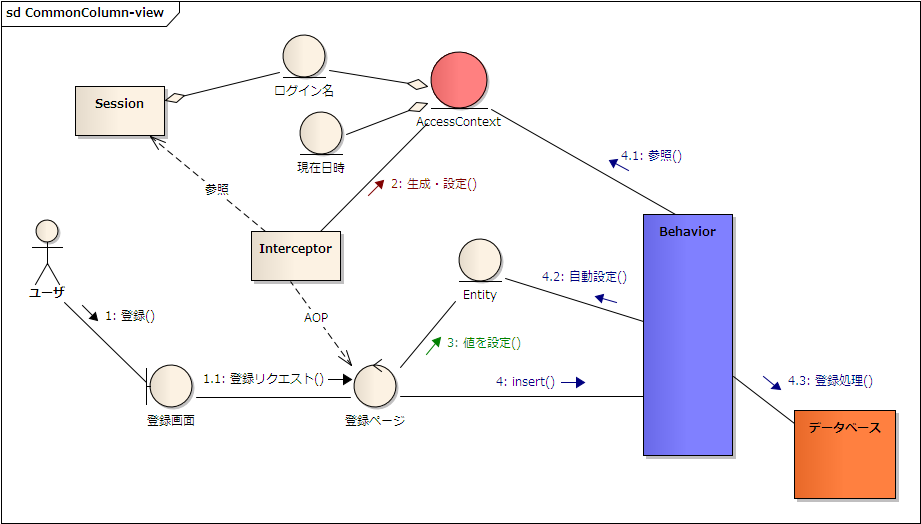

共通カラム
${indexlist}共通カラムとは？
例えば、以下のような 共通カラム のことを示します。
- 登録日時
- REGISTER_DATETIME
- 登録ユーザ
- REGISTER_USER
- 登録プロセス
- REGISTER_PROCESS
- 更新日時
- UPDATE_DATETIME
- 更新ユーザ
- UPDATE_USER
- 更新プロセス
- UPDATE_PROCESS
業務カラムとのギャップ
共通カラムは、レコードのメタ情報と言えます。それゆえ、業務カラムとはその扱いにギャップがあります。
- 業務カラム
- 開発時も重要、すっごいテストされる
- 共通カラム
- 開発時はあまり重要ではないが、運用時の "ここぞっ" ってときに大活躍
共通カラムは、開発時にあまり着目されません。ゆえに、テストの精度が業務カラムに比べれば低くなりがちです。 極端な話、共通カラムの値がバグっていても、システムは正常に稼働する可能性があります。 (逆に言うと、正常に稼働しないのであれば、共通カラムが業務的な意味を持ってしまっていると言えます)
で、いざ運用に入り、レコードのライフサイクルをとっさに見たいと思って共通カラムの値を覗いたとき、それが微妙に間違ってるとわかったときのその寂しさは計り知れないものでしょう。 できれば、開発時にあまりコストはかけずに、共通カラムの確実性を高めたいものです。
業務とメタ情報の国境は？
例えば、会員登録日時という業務情報があるとして、これを、共通カラムの登録日時でまかなっているケースをよく見かけます。
これは、レコードのインスタンスが生まれた物理的なタイミングと、会員と呼ばれるインスタンスが生まれた業務的なタイミングが、 ほぼ同時なためだと考えられます。 ただ、例えば会員のレコードは仮登録しておいて、実際に会員が了承を得て論理的な会員としてシステムに登録されるのはその三日後みたいなケースが発生した場合、 登録日時と会員登録日時は別物になります。
ちょっと無理矢理な例えではありますが、これと似たようなことが様々ケースであり得ると思うのです。一緒にしていると、どこかで矛盾を発生させてしまう可能性があります。 "Lazy登録会員のときだけ登録日時から三日足して比較しなければならない" なんてクエリを書かなければならない状況は想像もしたくありません。
更新日時でソートするとか、分割をするほど大事な日時ではないとか、ある程度は仕方ないところですが、 重要度の高い日時に関しては、ほぼ登録日時と同じ値を入れるにしても明示的にカラムを用意しておくと柔軟性が高まるでしょう。
意外に大事なプロセス情報
日時とユーザーは、とてもわかりやすく、どこの現場でもわりと共通カラムとして名を連ねるレギュラー陣だと思います。 ですが、プロセス (登録した画面やシステム) を記録するケースは少ないかもしれません。
だがしかし、"だれがいつ？" がわかっても、どの画面から？ってのがわからないとつらい状況もあります。 "すべての操作ログを残している" と言ったとしても、共通カラム情報が必要なときって、その膨大なログをじっくり読み解く時間がないケースが多いです。 とっさに見たい！ (共通カラムの存在意義って、とっさに見れるってのがわりと大きいと考えます)
かといって、REGISTER_PROCESS など仰々しくまたカラムを追加すると、共通カラムだけでどんどんカラムが増えていくよーと確かにちょっといやな感じです。 (必要は必要ですけど)
これはちょっと好みに依存しますが、共通カラムはメイン業務としてはあまり利用されないものであるという特性を活かし、 ユーザー情報やプロセス情報をごちゃまぜに一つのカラムに入れるやり方をしている現場もあります。 例えば、"登録トレース" といったようなカラムに、ユーザー情報とプロセス情報をカンマ区切りで入れ込んでしまいます。 本来、DB設計としてはやってはいけないことですが、共通カラムはあまり検索とかで利用されるようなものではなく、 運用時の調査などで人が目で見る情報なので、実害がないというところです。 実害があるということは、やはり業務上の役割を兼務してしまっているということで...。 (ただ、やっぱり日付だけは独立させますが)
正解はありませんが、この辺は、運用の経験がないとその大切があまりわからないもので、 開発時の視点だけで決めてしまうと、あとの人が困ってしまうので地味に大切だと思っています。 特に、とっさに見たい！という要件は、現場を見てるとよく感じるものです。
共通カラムの概念図
図 : 共通カラムの概念図 
{kind=link}
共通カラムの自動設定
共通カラムはほとんどの場合一定の規則によって値が設定されるため、登録時(insert)や更新時(update)に共通カラムへの設定処理を都度都度行うのではなく、 仕組みとして自動で設定するようにすることで、ディベロッパーの実装が手間を省くとともに、共通カラムに関するバグ(設定する値を間違えるなど)を抑制することができます。
DBFluteでは、共通カラムに設定する値を(主に)スレッドローカルに登録し、登録・更新処理の直前で Entity に対して共通カラムの値を自動設定します。スレッドローカルへの値の格納は、主にリクエスト処理が開始された直後に行います。
e.g. DBFluteにおける共通カラムの自動設定を利用した更新処理 {MEMBER} @Java
Member member = new Member();
member.setMemberName("Stojkovic");
// you don't need to set these columns
//member.setUpdateDatetime(...);
//member.setUpdateUser(...);
member.update(member); // common columns are auto set-up here
自動設定されるようにするための環境構築のポイントは主に二つあります。
- DBFluteプロパティ commonColumnMap.dfprop の設定
- スレッドローカル AccessContext への値の登録
自動設定の定義(dfprop)
commonColumnMap.dfprop にて、以下の設定を行います。
- 何のカラムが共通カラムなのか？
- 登録処理(insert)の前に共通カラムに何を設定するのか？
- 更新処理(update)の前に共通カラムに何を設定するのか？
e.g. 共通カラムの規則性を設定 @commonColumnMap.dfprop
map:{
; commonColumnMap = map:{
; REGISTER_DATETIME=TIMESTAMP ; REGISTER_USER=VARCHAR ; REGISTER_PROCESS=VARCHAR
; UPDATE_DATETIME=TIMESTAMP ; UPDATE_USER=VARCHAR ; UPDATE_PROCESS=VARCHAR
}
; beforeInsertMap = map:{
; REGISTER_DATETIME = $$AccessContext$$.getAccessTimestampOnThread()
; REGISTER_USER = $$AccessContext$$.getAccessUserOnThread()
; REGISTER_PROCESS = $$AccessContext$$.getAccessProcessOnThread()
; UPDATE_DATETIME = entity.getRegisterDatetime()
; UPDATE_USER = entity.getRegisterUser()
; UPDATE_PROCESS = entity.getRegisterProcess()
}
; beforeUpdateMap = map:{
; UPDATE_DATETIME = $$AccessContext$$.getAccessTimestampOnThread()
; UPDATE_USER = $$AccessContext$$.getAccessUserOnThread()
; UPDATE_PROCESS = $$AccessContext$$.getAccessProcessOnThread()
}
}
アプリで共通カラムの値を登録
スレッドローカルへの値の格納では、DBFluteが提供する共通カラムの自動設定のためのスレッドローカルクラス AccessContext を利用します(DBFluteランタイムのクラス)。このクラスの利用は必須ではありませんが、特別な利用が無い限りはこのクラスで十分要件を満たせるでしょう。
Interceptor にて値の登録
例えば、WEBアプリであれば、Pageクラス(に相当するクラス)に対する Interceptor の中で一律の処理を行うようにすると良いでしょう。(専用のInterceptorを作成)
e.g. 共通カラムの自動設定のために、InterceptorでAccessContextに値を登録 @Java
public Object invoke(MethodInvocation invocation) throws Throwable {
if (AccessContext.isExistAccessContextOnThread()) {
// 既に設定されていたら何もしないで次へ
// (二度呼び出しされたときのために念のため)
return invocation.proceed();
}
// [アクセス日時]
// 例えば、アプリで日時を取得する統一したインターフェースからの日時を利用。
Timestamp accessTimestamp = currentTimestamp();
// [アクセスユーザ]
// 例えば、セッション上のログインユーザを利用。
// ログインしていない場合のことも考慮すること。
String accessUser = getSession().getLoginUser();
// [アクセスプロセス]
// 例えば、Pageクラスの名前をそのまま利用。
// アプリケーションでプロセスを判別できる適切な名前を設定すること。
// DBのカラムサイズに注意(サイズオーバーしないように)
String accessProcess = getTargetClass(invocation).getName();
AccessContext context = new AccessContext();
context.setAccessTimestamp(accessTimestamp);
context.setAccessUser(accessUser);
context.setAccessProcess(accessProcess);
AccessContext.setAccessContextOnThread(context);
try {
return invocation.proceed();
} finally {
// 最後はしっかりクリアすること (必須)
AccessContext.clearAccessContextOnThread();
}
}
ServletFilterにて
Interceptorの仕組みを利用しない場合は、ServletFilter でも構いません。また、いずれにせよ、ServletFilter内で登録・更新処理を行う場合は、ServletFilterでの設定が必要です。
バッチアプリにて
バッチアプリがある場合は、バッチの起動の仕組みに則って、この設定処理を行って下さい。 (バッチのクラスに Interceptor が仕掛けられるならそれで良いでしょう)
項目が足りない場合
用意されているプロパティで項目が足りない場合、もしくは、意味的にしっくりくるプロパティがない場合は、独自のスレッドローカルクラスを用意しても良いですが、 AccessContext の key-value 形式で汎用的に利用できる accessValueMap を利用することもできます。
ディベロッパーへの通知
設定だけでなく、さらに重要なのは、設定したことをディベロッパーへ通知 することです。 DBFluteの経験のあるディベロッパーであれば、設定(dfprop)を見て通知なしで理解するするかもしれませんが、 そうでない場合は、一生懸命共通カラムの設定を都度都度行ってしまうかもしれません。
一時的な自動設定の無効化
例えば、システム移行のプログラムなどにおいて、共通カラムの値を保ったまま登録処理を行う ような場合があります(移行では多くの場合そうであることが想定されます)。 そのときは、この共通カラムの自動設定を利用してはいけません。
プログラム上で一時的に自動設定の無効化することができます。varyingInsert() や varyingUpdate() などのオプション付きのメソッドを利用し、InsertOption もしくは UpdateOption にて disableCommonColumnAutoSetup() を指定することで、その登録・更新処理では共通カラムの自動設定は行われなくなります。@since 0.9.7.8
また、全く同じことを Entity の disableCommonColumnAutoSetup() でも実現できます。 こちらは Entity 単位で無効化を指定することができます。(通常は、varyingInsert() や varyingUpdate() のオプションによる無効化の方が推奨されます)
SchemaHTMLでの表示
Docタスクで自動生成される SchemaHTML では、共通カラムは他のカラムとは見た目ちょっと違った表現が施され、区別が付きやすいようになっています。
自動設定の内部的な仕組み
自動設定処理は、Behaviorの中で CommonColumnAutoSetupper を呼び出して行われます。CommonColumnAutoSetupper はDBFluteランタイム上のインターフェースで、実装クラスは ImplementedCommonColumnAutoSetupper という allcommon 配下の(業務依存の)自動生成クラスです。
共通カラムを持っているテーブルの Entity は、EntityDefinedCommonColumn インターフェースを実装します。 このインターフェースを経由して(リフレクションを使わずに)値を設定しています。
Exampleのススメ
dbflute-basic-example では、テストケースの初期化と共に AccessContext を設定して、テスト内での登録・更新処理で自動設定されるようになっています。 (他のほとんどのExampleでも同様に利用されています)
また、dbflute-ymir-example や dbflute-sastruts-example では、実際にWEBアプリケーションと合わせた場合の共通カラムの自動設定を利用しています。 (Pageクラスに Interceptor を仕掛けています)